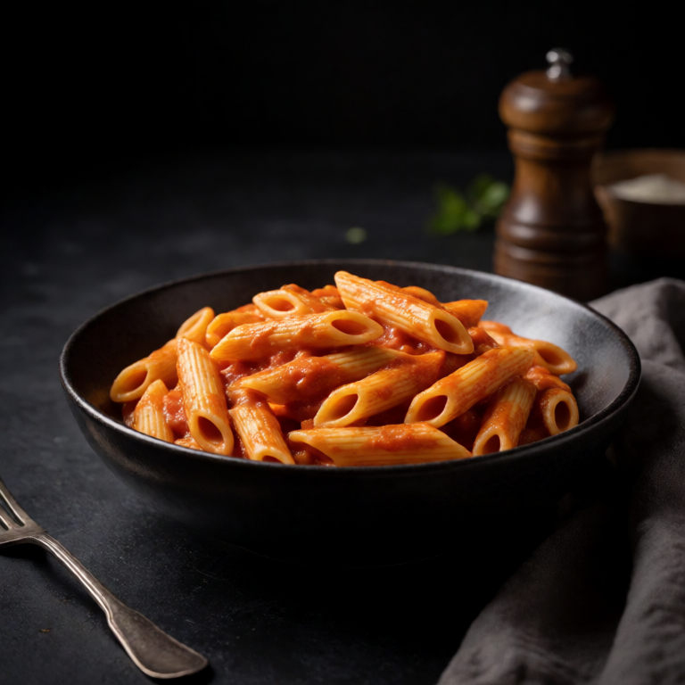

Recipe collection
Easy Pasta Recipes for One
A single bowl of pasta is one of the easiest dinners to scale well. The recipes here use measured portions, small pans, and enough pasta water to turn a handful of ingredients into a glossy sauce.
11 recipes in this collection


A better starting point
Better pasta for one
- Salt the cooking water and reserve some before draining. That starchy water is part of the sauce.
- Move the pasta into the sauce while it is still firm, then finish cooking the two together.
- For most appetites, 3.5 ounces or 100 grams of dried pasta makes a generous single serving.
Common questions
How much pasta should I cook for one?
About 3.5 ounces, or 100 grams, of dried pasta makes a generous single serving for most appetites.
Why save pasta water?
The starch helps cheese, oil, or tomato emulsify into a glossy sauce instead of pooling at the bottom of the bowl.
Can I scale these pasta recipes up?
You can. Doubling works cleanly. Beyond that, taste and season as you go, since seasoning does not scale linearly.